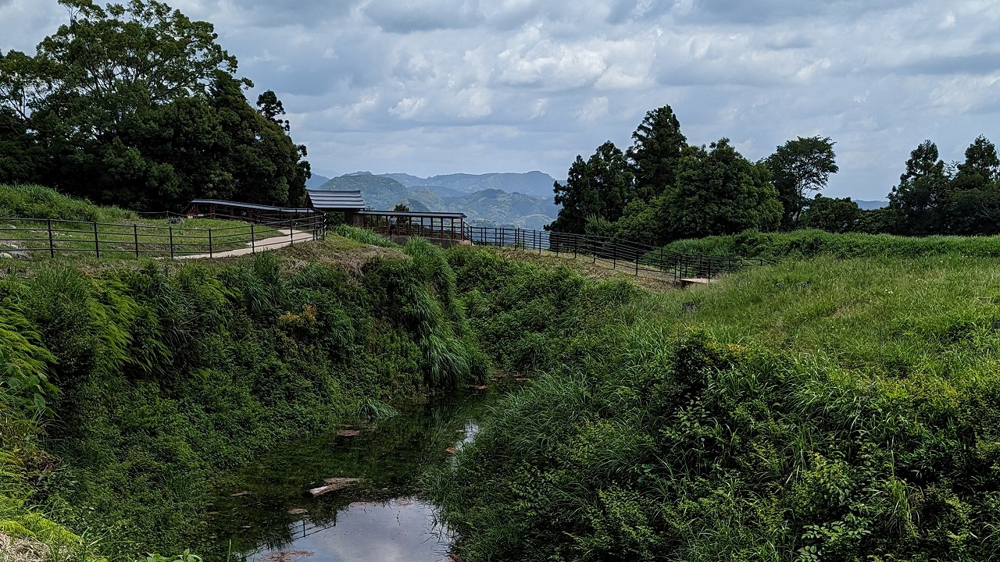
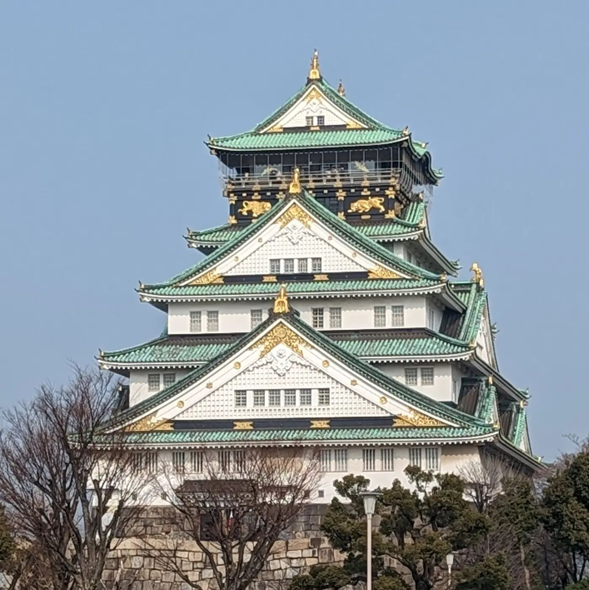

五稜郭
弘前城
久保田城
脇本城
秋田城
未訪問
山形城
米沢城
多賀城
仙台城
若松城
白河小峰城
向井羽黒山城
二本松城
箕輪館
新田金山城
名胡桃城
沼田城
岩櫃城
高崎城
足利氏館
唐沢山城
多気城
水戸城
笠間城
土浦城
小田城
鉢形城
川越城
忍城
杉山城
菅谷館
武蔵松山城
滝の城
岩槻城
佐倉城
本佐倉城
小金城
江戸城
八王子城
滝山城
品川台場
石神井城
小田原城
石垣山城
小机城
新発田城
金沢城
丸岡城
一乗谷朝倉氏遺跡
福井城
越前大野城
松代城
上田城
小諸城
松本城
龍岡城
岐阜城
大垣城
武田氏館
甲府城
新府城
犬山城
名古屋城
岡崎城
長篠城
小牧山城
山中城
駿府城
掛川城
興国時城
諏訪原城
高天神城
浜松城
二条城
小谷城
彦根城
安土城
大阪城
千早城
岸和田城
郡山城
伊賀上野城
松阪城
明石城
姫路城
赤穂城
岡山城
鬼ノ城
備中松山城
丸亀城
高松城
 五稜郭
五稜郭 弘前城
弘前城 久保田城
久保田城 脇本城
脇本城 秋田城
秋田城 山形城
山形城 米沢城
米沢城 多賀城
多賀城 仙台城
仙台城 若松城
若松城 白河小峰城
白河小峰城 向井羽黒山城
向井羽黒山城 二本松城
二本松城 箕輪館
箕輪館 新田金山城
新田金山城 名胡桃城
名胡桃城 沼田城
沼田城 岩櫃城
岩櫃城 高崎城
高崎城 足利氏館
足利氏館 唐沢山城
唐沢山城.png) 多気城
多気城 水戸城
水戸城 笠間城
笠間城 土浦城
土浦城 小田城
小田城 鉢形城
鉢形城 川越城
川越城 忍城
忍城 杉山城
杉山城 菅谷館
菅谷館 武蔵松山城
武蔵松山城 滝の城
滝の城 岩槻城
岩槻城 佐倉城
佐倉城 本佐倉城
本佐倉城 小金城
小金城 江戸城
江戸城 八王子城
八王子城 滝山城
滝山城 品川台場
品川台場 小田原城
小田原城 石垣山城
石垣山城 小机城
小机城 新発田城
新発田城 金沢城
金沢城 丸岡城
丸岡城 一乗谷朝倉氏遺跡
一乗谷朝倉氏遺跡 福井城
福井城 越前大野城
越前大野城 松代城
松代城 上田城
上田城 小諸城
小諸城 松本城
松本城 龍岡城
龍岡城 岐阜城
岐阜城 大垣城
大垣城 武田氏館
武田氏館 甲府城
甲府城 新府城
新府城 犬山城
犬山城 名古屋城
名古屋城 岡崎城
岡崎城 長篠城
長篠城 小牧山城
小牧山城 山中城
山中城 駿府城
駿府城 掛川城
掛川城 興国時城
興国時城 高天神城
高天神城 浜松城
浜松城 二条城
二条城 小谷城
小谷城 彦根城
彦根城 安土城
安土城 千早城
千早城 岸和田城
岸和田城 郡山城
郡山城 伊賀上野城
伊賀上野城 松阪城
松阪城 明石城
明石城 姫路城
姫路城 赤穂城
赤穂城 岡山城
岡山城 鬼ノ城
鬼ノ城 備中松山城
備中松山城 丸亀城
丸亀城 高松城
高松城